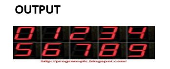

Objective: Write a program to display the digits in decimal from 0-7 in to 7-
ource Code:
mov al,80h =>make all port
out 1f,al =>out 80h to port
mov al,00h =>mov 0
out 19h,al =>mov 0 to port int 3
mov al,f9h =>mov 1
out 19h,al =>mov 1 to port int 3
mov al,a4h =>mov 2
out 19h,al =>mov 2 to port int 3
mov al,b0h =>mov 3
out 19h,al =>mov 3 to port int 3
............(so on to 9)
Output:
